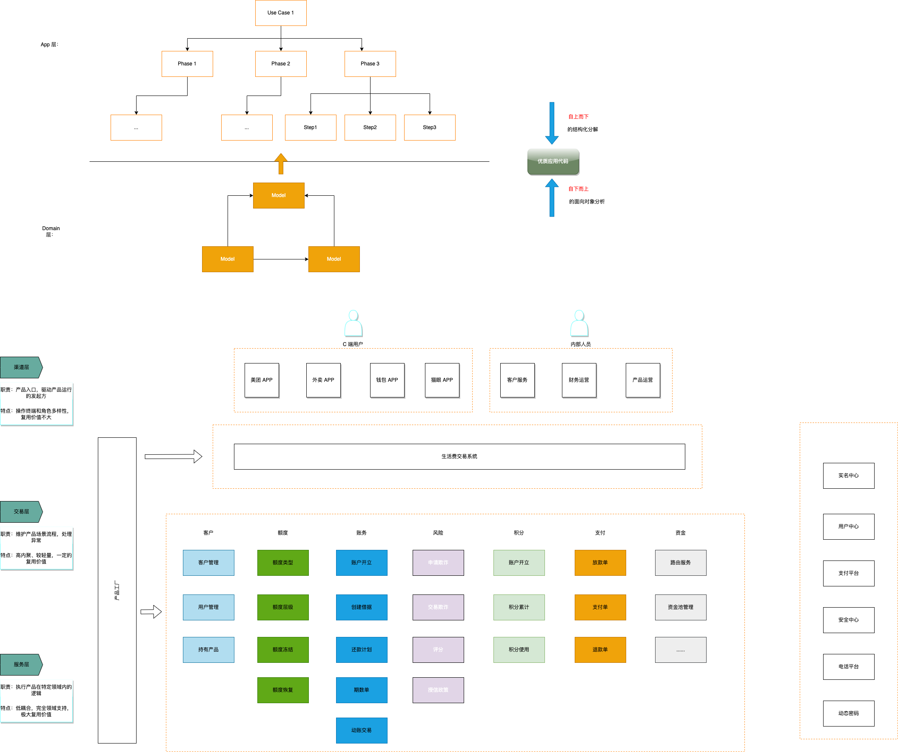

如何写业务代码
业务研发面对的问题
- 稳定的业务模式
- 不稳定的需求
- 业务对交付的渴望
假设
- 命名规范（《clean code》）
- 面向对象设计（SOLID原则、贫血/充血模型、设计模式）
系统要拆分

流程控制系统与领域系统.drawio
- 每一个用例（解决的一个问题）都由访问逻辑和执行逻辑组成。访问逻辑负责用例执行的顺序与分支，并调用执行逻辑完成完整业务逻辑。
- 访问逻辑由单独的交易系统负责。执行逻辑由个子系统负责。
工程要拆分
三层架构 + 洋葱架构
代码要拆分
- 业务代码：描述核心业务逻辑的代码，核心是保持业务的流程及业务状态的一致性
- 领域对象与领域服务，不得对外部有任何依赖（工具类除外）
- 最核心的几个抽象：
- 校验：参数有效性校验、参数的业务属性校验。在进入正常业务逻辑代码前，完成所有的校验工作。
- 异常：业务异常：所有不符合业务逻辑而产生的异常。 系统异常：因为程序本身or依赖产生的异常。 所有的异常第一位runningtime异常。
- 数据: 业务数据：保存领域对象状态的数据。 非业务数据：过程数据。业务的核心流程中，只对业务数据的持久化负责。
- 参数：任何时候，任何方法的参数都需要对象化（除了查询）
- 业务流水号：要有业务流水号
代码要分类
每个子系统（或者对象）提供5类基本接口：
- 做事情：void doing:做某个改变系统系统状态业务决策，成功无返回，失败抛异常，并明确失败原因，无论是系统异常还算业务异常。需要做业务幂等。
- 判断事情：boolean deciding:做某个不改变系统状态的业务决策，成功返回tre或false，失败抛异常，并明确失败原因，无论是系统异常还算业务异常。天然幂等。
- “知道”Object knowing:期待返回结果。因为系统提供knowing方法，本质上是对外宣传我知道这件事情。如果返回null，则应抛业务异常。
返回系统内“开箱即用”的知识，即系统内的活动对象所拥有的知识，无需去存储内搜索，无业务决策。一般返回具体对象或列表。天然幂等（所以knowing一般通过当前活动的domain对象向外暴露） - “查找”分3种：
- “搜索” Set finding：不期待返回结果。查找本身有可能找不到，无论是否能够查找到，均返回集合。不抛业务异常，只抛程序异常。返回系统内需要通过存储介质“搜索”才能得到的知识。一般返回具体对象或列表。天然幂等（所以finding一般动过dao对象对外暴露，或者干脆由专门的查询系统对外暴露）
- “严格获取” Object get：期待返回结果，并且根据业务规则，有且只返回一个符合预期的结果。如果获取不到，抛业务异常。
- “不严格获取”：Object getIfExist不期待一定返回结果，根据业务规则，可以有也可以没有。如果有结果，只返回一个符合预期结果。如果获取不到，不抛业务异常
- “工具类”：不你属于任何一个业务对象，无状态，结果仅仅由输入参数决定，幂等
一些其他原则
访问原则：
- 子系统仅接受产品层发起的doing方法
- 子系统对产品层及其他子系统开发非doing方法
- 子系统必须对外界提供领域化接口和领域化查询接口，不接受调用方的特殊化接口。特列：上游对性能极度敏感，且原有接口无优化空间，可以专门提供特别的接口。
- 子系统不对展现逻辑负责
- 系统间传递领域化参数，并定制化thrift传输对象
- 调用方异常必须包含被调用方的原始异常栈
- 所有需要适配的工作，由调用方自行负责
- 所有子系统，必须接受产品系统的业务流水号，并提供根据业务流水号查询历史数据的能力
- 所有带业务流水号的查询，子系统必须保持数据的最新与准确
- doing、deciding、get由子系统提供业务一致性保证（抛业务异常）
- knowing、finding、getIfExsit由调用方提供业务一致性保证（抛业务异常）
- 信息传递最短路径原则。子系统自己可以获取的信息，不能由其他系统代为传递
- 当外部访问者需要新的概念，并且此概念完全由领域类的数据定义时，此概念由领域方维护和解释。
校验原则
- 参数合法性（无论字面校验、业务校验）由产品系统负责
- 由子系统负责的领域的流程准入合法性，由产品系统调用子系统的deciding方法校验。
- 无论交易系统是否校验过，领域系统必须完整自己领域类的完整校验
数据存储原则
- 每个子系统严格区分业务数据与过程数据
- 每个子系统只对自己领域内的数据负责，不对调用方负责。
- 每个子系统负责自己领域的的数据一致性或者完备性，不得要求被调用方为自己的业务逻辑提供其内部业务决策不需要存储的数据。如果需要同步其他子系统数据，由当前子系统负责保证时效及数据一致性
All articles in this blog are licensed under CC BY-NC-SA 4.0 unless stating additionally.